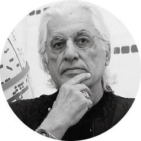
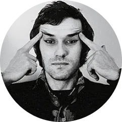
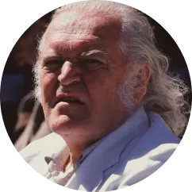
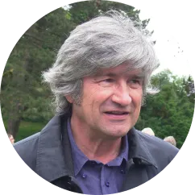
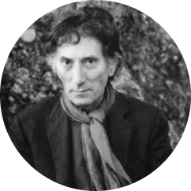
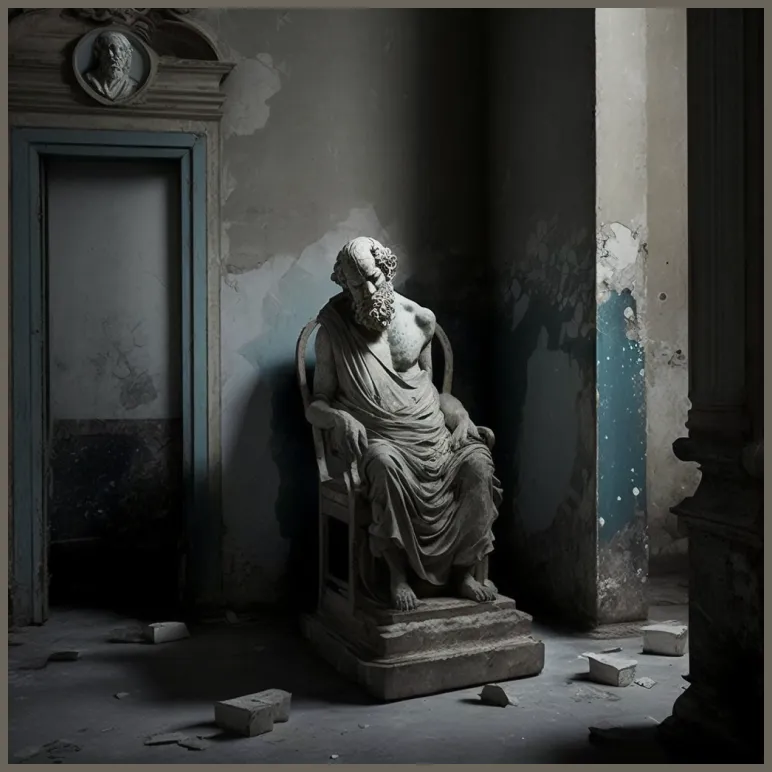

L'arte povera est un mouvement artistique italien qui a émergé dans les années 1960 et qui a été caractérisé par l'utilisation de matériaux simples et courants dans la création
d'oeuvres d'art. Le terme "arte povera" signifie "art pauvre" en italien, et fait référence à la volonté des artistes de cette mouvance de s'éloigner des matériaux traditionnels de l'art,
tels que la toile et la peinture, pour utiliser des éléments issus de la vie quotidienne, comme le bois, le papier, le verre, le fer et même la terre. Les artistes de l'arte povera
ont également été influencés par des mouvements tels que le minimalisme et le conceptuelisme, et ont utilisé des performances et des installations pour créer des oeuvres qui questionnaient
les structures sociales et culturelles en place.
CHRONOLOGIE

Germano Celant
1967
Germano Celant est un critique d'art et un théoricien de l'Arte Povera italien. Celant a été l'un des principaux promoteurs du mouvement de l'Arte Povera et a écrit de nombreux articles
et essais sur l'art contemporain, en particulier sur les artistes italiens. Il a également organisé de nombreuses expositions d'Arte Povera et a été directeur artistique de la Biennale de
Venise en 1986.

Alighiero Boetti
1967
Alighiero Boetti était un artiste italien de l'arte povera qui est né en 1940 à Turin et qui est décédé en 1994 à Rome. Boetti était connu pour ses installations, ses performances et ses
oeuvres sur papier, qui ont souvent exploré des thèmes tels que la langue, l'identité et la politique. Boetti a également été impliqué dans des projets de collaboration avec des artistes et
des artisans du Moyen-Orient et d'Afrique, et a été considéré comme l'un des principaux représentants de l'arte povera.

Mario Merz
1967
Mario Merz était un artiste italien, né en 1925 à Milano et décédé en 2003. Il est surtout connu pour ses oeuvres d'art conceptuel et minimaliste, qui ont souvent exploré des thèmes
tels que la nature, la science et la technologie. Il est considéré comme l'un des principaux représentants de l'Arte Povera. Parmi ses oeuvres les plus connues, on peut citer "Igloos"
(des structures en verre et en métal qui évoquent des igloos), "Fibonacci" (des séries de chiffres qui suivent la suite de Fibonacci) et "Casa Cascata"
(une maison construite avec des matériaux naturels et suspendue dans les arbres).

Giuseppe Penone
1967
Giuseppe Penone est un sculpteur et artiste conceptuel italien né en 1947 à Garessio, en Italie. Il est connu pour ses oeuvres qui explorent les liens entre l'homme et la nature,
souvent en utilisant des matériaux naturels tels que le bois, la pierre et la feuille d'or. Il est également l'un des principaux représentants de l'Arte Povera. Parmi ses oeuvres les
plus connues, on peut citer "Albero che cammina" (un arbre qui semble marcher), "Espace Indéterminé" (une installation dans laquelle un arbre pousse à travers une plaque de verre) et
"L'Anello di fidanzamento" (un anneau en or suspendu dans un arbre).

Giovanni Anselmo
1984
Giovanni Anselmo est un artiste conceptuel italien né en 1934. Il a été l'un des principaux représentants de l'Arte Povera, mouvement artistique italien des années 1960 qui mettait
en avant l'utilisation de matériaux simples et pauvres dans l'art. Anselmo a travaillé avec de nombreux médiums, y compris la sculpture, la photographie et l'installation, et a été
reconnu pour son travail explorant les thèmes de la perception, de la mesure et de l'espace.

VAGABOND
Venez découvrir l'exposition "Vagabond" au Fondation Cartier du 13 avril au 23 juin 2021 ! Cette exposition de l'Arte Povera vous emmènera à la découverte d'oeuvres uniques et originales, qui explorent les liens entre l'homme et la nature.
Vous pourrez profiter de cette expérience artistique tous les jours de 11h à 20h, sauf le lundi. Le mardi, l'exposition sera également ouverte jusqu'à 22h. N'oubliez pas que la fermeture des salles débute à 19h45 (21h45 les mardis).
Il y a plusieurs tarifs disponibles pour cette exposition : plein tarif à 11€, tarif réduit à 7,50€, réduction pour les 13-25 ans à 5€ et Fondation Cartier Pass à 18€-50€. Les moins de 13 ans, les détenteurs de laissez-passer annuel, de carte Icom, de carte de presse, de carte d'invalidité et les étudiants bénéficient d'une entrée gratuite.
Ne manquez pas l'opportunité de découvrir cette exposition passionnante et de soutenir l'Arte Povera ! Nous espérons vous voir bientôt au Fondation Cartier.